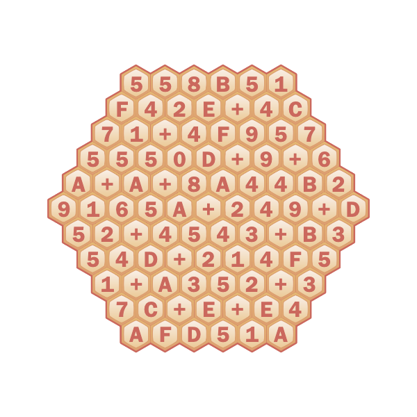
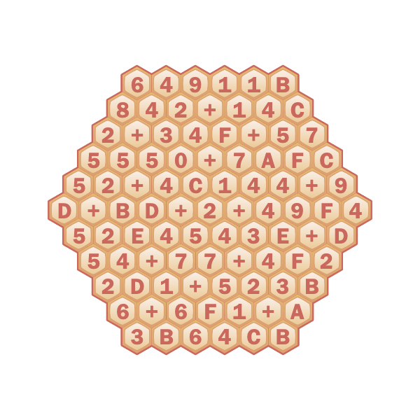
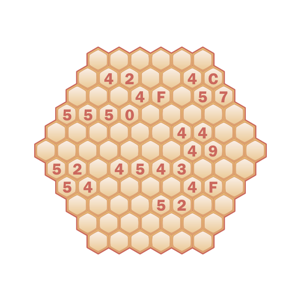

As clued by the flavortext "Always sum correctly; it's important.", the digits and plus sign in hexes at the top of the puzzle, and the plus signs in the two given grids, the hexes in each grid contain either a plus sign or a hexadecimal digit, and the resulting expression in each row/diagonal sums to the corresponding hexadecimal number clued on the sides of the grid. For example, the middle row of the left grid is 9165A+249+D, giving the result 918B0.
The completed grids are:  
Some tips on solving this without a program:
Edges cannot contain a +, so they can immediately be filled out.
Sums with a large number of digits are the most constraining. For example, for the C5942432 diagonal, this can only be expressed as C59424XX + X or X + C59424XX (and given the C at the start and F at the end, it’s C5942423 + F).
Double-check your hexadecimal math (or convert to decimal)!
There are many cells which are the same in both grids (none of which are plus signs). They are shown here:

The overlap digits always come in pairs. Solvers may recognize these pairs of hexadecimal digits as ASCII, or note that the flavortext "Always sum correctly. (It's important!)" clues ASCII via first letters. The ASCII for these pairs of hexadecimal digits, reading left-to-right and top-to-bottom (as usual), spells "BLOWUPDIRECTOR", cluing the answer, MICHELANGELO ANTONIONI.
I've had this rough puzzle idea for a while, and I think this is a nice relatively easy implementation of it. I don't know of any other grid logic puzzles where operations are placed into spaces.
The idea of using a hexagonal grid comes from the 2013 MIT Mystery Hunt puzzle A Regular Crossword. I liked the thematic combination of the hexagonal grid and hexadecimal numbers. It seems to add something over just, for example, having a square grid with decimal numbers and across/down clues.
There is far more information (about one of the three directions of clues too much) than is needed to solve this puzzle, even without the initial plus sign in each grid. (I was a bit worried about this, but it being easy to make mistakes and this being a round one puzzle, the fact that everything was confirmed seemed good.) That also, however, means that it's easy to create this type of puzzle; generate a grid, then give the clues for it and manually check uniqueness (which almost always happens). I wrote a program to do this, which was very helpful in making changes to the puzzle when needed. (As a curiosity, note that as the grid gets bigger, assuming the fraction of pluses stays roughly the same, the amount of information needed goes up, and for a big enough grid uniqueness would fail.)